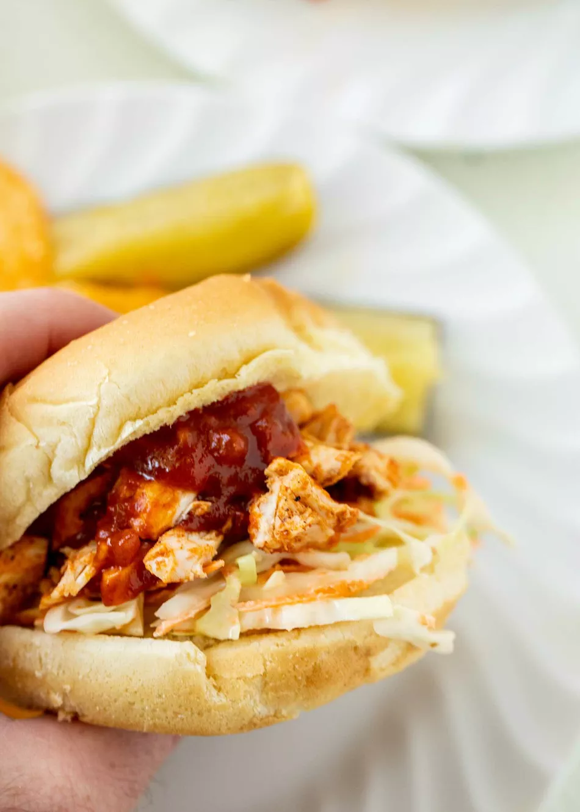

BBQ Chicken Sandwiches
Return to Homepage

Grilled BBQ Chicken Sandwhiches
Yields 8 Servings
Description:
Fire up the grill for this easy family recipe! These sandwhiches pair well with a tangy BBQ sauce, and are sure to please!
Ingredients:
Pickle Slaw:
- 1/2 cup mayonnaise
- 1/4 cup dill pickle juice
- 1 Tablespoon sugar
- 1/2 green cabbage, thin shredded (about 4 cups)
- 2 medium carrots, grated (about 1 cup)
- 1/4 cup chopped dill pickles
Chicken Filling:
- 2 pounds boneless skinless chicken breast, butterflied
- 2 Tablespoons olive oil
- 1/2 teaspoon kosher salt
- 1/2 teaspoon black pepper
- 1-1 1/2 cups BBQ Sauce (store-bought or homemade)
- 8 hamburger buns
Serrano Mayo:
- 2-3 grilled serrano peppers, seeds removed
- 1 cup mayonnaise
- Juice from 1/2 lime
- Pinch of salt
Directions
Make the Slaw:
- Whisk together may, pickle juice, and sugar. Stir in shredded cabbage, carrots, and pickles. Stir together and taste. Season to your liking. Slaw can be made a day or two in adcance with no problem.
Prepare the Chicken:
- Preheat grill to medium-high heat. To butterfly the chicken, use a sharp knife to slice the chicken horizontally - leaving the edge connected so you can open the checken breast - making it thinner and therefore faster-cooking. Then drizzle with olive oil, salt, and pepper.
- Pour 1/2 cup of BBQ sauce into a bowl and set aside. You will add it to the cooked chicken later.
- Add checken to grill and spoon BBQ sauce over each piece of chicken. You will use 1/3 to 1/2 cup of BBQ sauce for this part of cooking. Grill for 5 to 6 minutes on the first side. Flip and add BBQ sauce to the second side. Grill for another 5 to 6 minutes on the second side or until the checken breasts reach 165 degrees F. Remove from the grill.
- As the chicken grills, add 2 to 3 serrano peppers to the grill. Grill them for 2 to 3 minutes per side. Remove and let cool.
- When the chicken comes off the grill, let it cool briefly and then use two forks to shred or roughly chop the chicken. Stir the 1/2 cup of BBQ sauce you set aside in step 2 into the shredded chicken.
Make the Serrano Mayo:
- Split grilled peppers in half and remove seeds. Add to a small food processor with mayo, lime juice, and slat. Pulse until combined.
Make Your Sandwhich:
- Toast your sandwhich buns (if you want to) and smear with serrano mayo. Top with a heap of pickle slaw and shredded BBQ chicken. Serve with chips and pickles on the side. Leftover chicken will keep in the fridge for 3 to 4 days or freeze in an airtight container for up to three months.
Return to Homepage